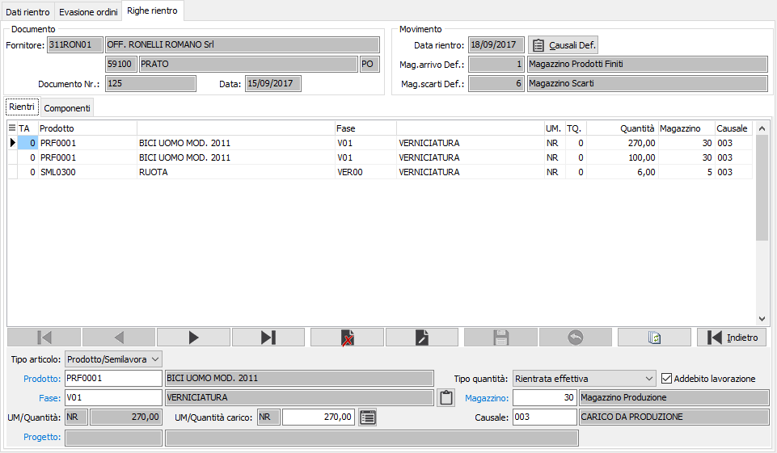
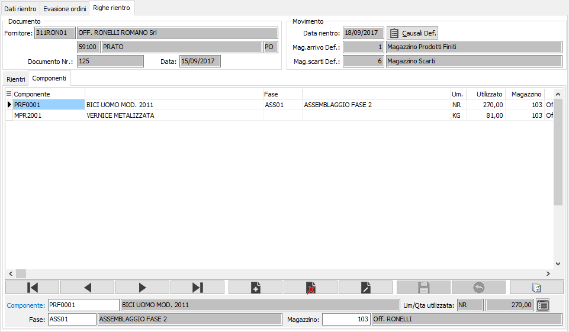

Righe rientro
Sulla base quindi delle quantità che l’operatore ha finora specificato vengono generate le righe del rientro.
La finestra video si articola su due pagine una relativa alle righe in rientro e l’altra che riporta i componenti legati alla riga su cui siamo posizionati

Nella pagina dei rientri sono generate in automatico le righe relative alle quantità selezionate, è possibile anche inserire manualmente righe di restituzione di materie scaricando il magazzino del terzista e ricaricando il proprio magazzino componenti. Sulle righe sono riproposti il magazzino e la causale di rientro indicate nella pagina iniziale per i componenti, il tipo quantità può essere variato, e per i composti gestiti con dettaglio è possibile indicare il dettaglio di rientro. Vengono mostrate l'unità di misura e la quantità dell'ordine terzista e separatamente, l'unità di misura e la quantità di carico che, nel caso di prodotti con più unità di misura, potrebbero differire.
TIPO: definisce il tipo di rigo: rigo prodotto o semilavorato, oppure rigo materia prima. Per quest'ultimo tipo non saranno attivi tutti i campi del rigo.
PRODOTTO: indica il codice del prodotto oggetto del rientro. Sul campo sono attive le funzioni di ricerca (F9) e manutenzione (CTRL+W) sulla tabella stessa.
Nel caso sia attiva la gestione della commessa di produzione è possibile specificarla o variarla tramite l'apposito pulsante presente accanto alla descrizione del prodotto.
FASE: indica la fase di lavorazione del prodotto per cui stiamo effettuando il rientro. Sul campo sono attive le funzioni di ricerca (F9) e manutenzione (CTRL+W) sulla tabella stessa.
UNITÀ DI MISURA: l'unità di misura del prodotto. Sul campo sono attive le funzioni di ricerca (F9).
QUANTITÀ CARICO: quantità derivante dalle quantità inserite sulla prima pagina. Se attiva la gestione del dettaglio quantità per questo documento, è presente il bottone dettaglio, a destra del campo quantità, tramite il quale sarà visualizzata la relativa finestra di dettaglio quantità; l'attivazione della finestra avviene comunque in automatico al momento dell'accesso al campo quantità.
TIPO QUANTITÀ: definisce la tipologia della quantità: rientrata effettiva, resa non lavorata oppure scarto. La quantità mancante/eccedente non figura come rigo in quanto viene gestita insieme alla quantità rientrata effettiva.
MAGAZZINO: indica il magazzino di arrivo della merce. Come per le quantità è derivante dai dati presenti sulle righe della prima pagina. Sul campo sono attive le funzioni di ricerca (F9) e manutenzione (CTRL+W) sulla tabella stessa.
CAUSALE: indica la causale da utilizzare per il movimento del magazzino. Come per le quantità è derivante dai dati presenti sulle righe della prima pagina. Sul campo sono attive le funzioni di ricerca (F9).
ADDEBITO LAVORAZIONE: spuntare la casella se per la quantità deve essere effettuato l'addebito del costo di lavorazione, altrimenti lasciarla vuota (nel caso di una rilavorazione o di un solo reso non lavorato).
Se attiva la gestione progetti è possibile specificare anche il progetto su ogni singola riga; di default viene impostato il progetto presente sull'ordine terzista.
 la pressione sul pulsante oppure del tasto Annulla sulla toolbar o del tasto ESC consente, previa richiesta di conferma, di annullare le selezioni fatte fino ad ora e tornare alla prima pagina per effettuare correzioni, rielaborare gli ordini e generare nuove righe.
la pressione sul pulsante oppure del tasto Annulla sulla toolbar o del tasto ESC consente, previa richiesta di conferma, di annullare le selezioni fatte fino ad ora e tornare alla prima pagina per effettuare correzioni, rielaborare gli ordini e generare nuove righe.
Nella pagina dei componenti sono presenti i componenti del rigo su cui siamo posizionati nella pagina delle righe.

Per i componenti generati direttamente dal rigo proveniente dall'ordine terzista sarà possibile modificare il magazzino e, se presente, l'eventuale dettaglio varianti/ubicazioni/lotti (tramite il bottone dettaglio o semplicemente accedendo al campo quantità sarà visualizzata la relativa finestra di dettaglio quantità), ma non sarà possibile modificare gli altri dati compresa la quantità.
E' possibile comunque inserire nuovi componenti dove tutti i campi saranno attivi.
|


|
Se attiva la gestione matricole sarà possibile accedere dal singolo rigo/dettaglio alla finestra delle matricole tramite il pulsante sul rigo o tramite il pulsante Matricole in alto con cui si accede alla finestra di gestione massiva. I rientri del conto lavoro hanno la particolarità di gestire le matricole sia sui composti che sui componenti; per quanto riguarda i composti la gestione della matricola è subordinata al flag di configurazione “Tipo assegnazione matricole produzione” che modifica le regole di inserimento e controllo delle matricole rispetto alla gestione documenti/movimenti. In caso di "Assegnazione sulla prima fase" è obbligatorio assegnare le matricole sulla prima fase; se presenti matricole prenotate in RDP o in fase di lancio saranno assegnate automaticamente, sarà effettuata un'assegnazione automatica dalla fase precedente sulla fase successiva; in caso di "Assegnazione sull'ultima fase" è obbligatorio assegnare le matricole sull'ultima fase e non sarà possibile farlo nelle fasi precedenti; se presenti matricole prenotate in RDP o in fase di lancio saranno assegnate automaticamente.
|
Al termine dell'inserimento dei dati, quando viene premuto il tasto F10 oppure il pulsante Salva nella tool bar compare, se configurato, la finestra di conferma della registrazione, al termine della registrazione, viene richiesto se si deve effettuare la stampa diretta del rientro.